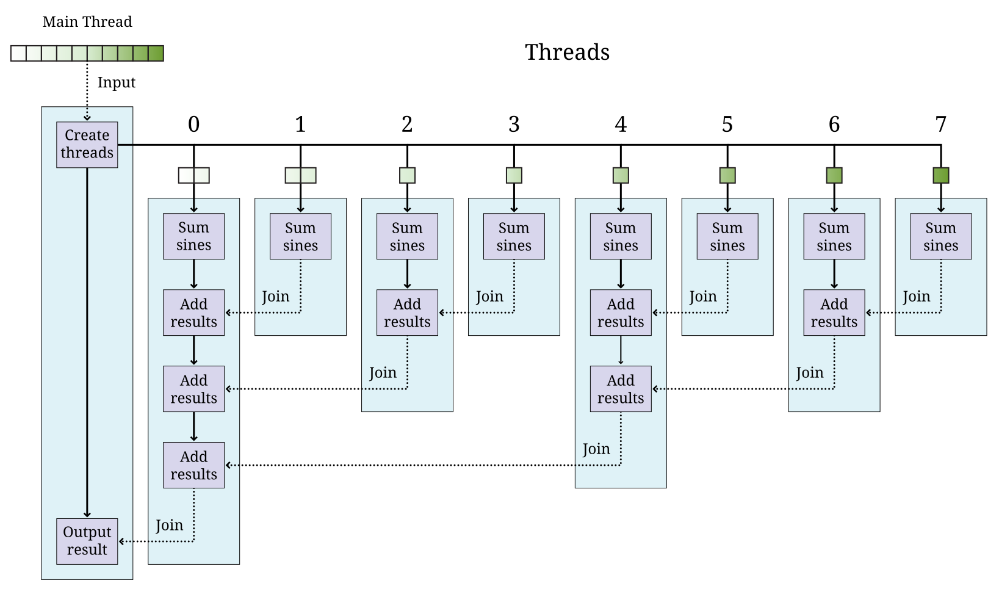

13. Concurrent Programming
Time is the substance from which I am made. Time is a river which carries me along, but I am the river; it is a tiger that devours me, but I am the tiger; it is a fire that consumes me, but I am the fire.
13.1. Introduction
So far we have focused mostly on writing sequential programs. Such programs are executed sequentially by a computer. Sequential execution implies that program statements are executed one at a time in a sequence determined by program logic and input data. While it is common for programmers to write sequential programs, the widespread availability of multicore processors in a single computer has led to an increase in the demand for programmers who can write concurrent programs. More than one program statement can be executed independently by a multicore processor.
A concurrent program is one in which several statements can be executed simultaneously by two or more cores. In this chapter we show how to write simple concurrent programs in Java that exploit the power of a multicore computer. We begin with an example in which the fate of the planet is in grave danger!
13.2. Problem: Deadly virus
A deadly virus capable of wiping out the world’s population is about to be released by an evil mastermind. Only he knows the security code that can stop the countdown. The world is doomed. The single hope for salvation lies with you and your Java programming skills. Through the investigations of a top secret, government-funded spy ring, it has been revealed that the security code is tied to the number 59,984,005,171,248,659. This large number is the product of two prime numbers, and the security code is their sum. All you need to do is factor the number 59,984,005,171,248,659 into its two prime factors.
Of course, there is a catch. The deadly virus is going to be released soon, so soon that there might not be enough time for your computer to search through all the numbers one by one. Instead, you must use concurrency to check more than one number at a time.
Does this problem sound contrived? To keep information sent over the Internet private, some kinds of public key cryptography rely on the difficulty of factoring large numbers. Although factoring the number in this problem is not difficult, the numbers used for public key cryptography, typically more than 300 decimal digits long, have resisted factorization by even the fastest computers.
13.3. Concepts: Splitting up work
The deadly virus problem has one large task (factoring a number) to perform. How should we split up this task so that we can do it more quickly? Splitting up the work to be done is at the heart of any concurrent solution to a problem.
In a multicore processor, each core is an independent worker. It takes some care to coordinate these workers. First of all, we still need to get the right answer. A concurrent solution is worthless if it is incorrect, and by reading and writing to the same shared memory, answers found by one core can corrupt answers found by other cores. Preventing that problem will be addressed in Chapter 14. If we are sure the concurrent solution is correct, we also want to improve performance in some way. Perhaps we want the task to finish more quickly. Perhaps we have an interactive system that should continue to handle user requests even though it is working on a solution in the background. Again, if the overhead of coordinating our workers takes more time than a sequential solution or makes the system less responsive, it’s not useful.
There are two main ways to split up work. The first is called task decomposition. In this approach, each worker is given a different job to do. The second is called domain decomposition. In this approach, the workers do the same job, but to different data.
It is possible to use both task and domain decomposition together to solve the same problem. With both kinds of decomposition, it is usually necessary to coordinate the workers so that they can share information. In the next two subsections, we describe task decomposition and domain decomposition in greater depth. Then we discuss mapping tasks to threads of execution and the different memory architectures that can be used for concurrent programming.
13.3.1. Task decomposition
The idea of breaking a task down into smaller subtasks is a natural one. Imagine you are planning a dinner party. You need to buy supplies, cook the dinner, clean your house, and set the table. If four of you were planning the party, each could perform a separate activity. The preparations could go much faster than if a single person was doing the work, but coordination is still important. Perhaps the person cooking the dinner couldn’t finish until certain supplies had been bought.
Task decomposition is often easier than domain decomposition because many tasks have natural divisions. Unfortunately, it is not always an effective way to use multiple cores on a computer. If one task finishes long before the others, a core might sit idle.
The next two examples give simple illustrations of the process of splitting a task into smaller subtasks in the context of multicore programming.
Consider a simple video game that consists of the following tasks.
-
start game
-
process move
-
update score
-
repaint screen
-
end game

Suppose that tasks B and D are independent and can be executed concurrently if two cores are available. Task D continually updates the screen with the old data until task C updates the information.
Figure 13.1(a) and (b) show how the tasks in this video game can be sequenced, respectively, on a single core or on two cores. All tasks are executed sequentially on a single-core processor. In a dual-core processor tasks B and C can execute on one core while task D is executing concurrently on another. Note from the figure that task C sends the score and any other data to task D which is continuously updating the screen. Having two cores can allow a faster refresh of the display as the processor does not have to wait for tasks B or C to complete.
Suppose that the following mathematical expression is to be evaluated for parameters \(a\) and \(K\) at a given value of \(t\). \(2\cdot K\cdot a\cdot t\cdot e^{-a\cdot t^2}\) We can divide the expression into two terms: \(2\cdot K\cdot a\cdot t\) and \(e^{-a\cdot t^2}\). Each of these terms can be assigned to a different task for evaluation. On a dual-core processor, these two tasks can be executed on separate cores and the results from each combined to generate the value of the expression by the main task.

Figure 13.2 shows how this expression can be evaluated on single core and dual-core processors. Sometimes, using multiple cores to evaluate an expression like this will take less time than a single core. However, there is no guarantee that using multiple cores will always be faster, because tasks take time to set up and to communicate with each other.
These examples illustrate how a task can be divided into two or more subtasks executed by different cores of a processor. We use a dual-core processor for our examples, but the same ideas can be expanded to a larger number of cores.
13.3.2. Domain decomposition
In a computer program, every task performs operations on data. This data is called the domain of that task. In domain decomposition, the data is divided into smaller chunks where each chunk is assigned to a different core, instead of dividing a task into subtasks. Each core executes the same task but on different data.
In the example of the dinner party, we could have used domain decomposition instead of (or in addition to) task decomposition. If you want to cook a massive batch of mashed potatoes, you could peel 24 potatoes yourself. However, if there are four of you (and you each have a potato peeler), each person would only need to peel 6 potatoes.
The strategy of domain decomposition is very useful and is one of the major focuses of concurrency in this book. Problems in modern computing often use massive data, comprising millions of numbers or thousands of database records. Writing programs that can chop up data so that multiple cores can process smaller sections of it can greatly speed up the time it takes to finish computing a solution.
Domain decomposition can be more difficult than task decomposition. The data must be divided evenly and fairly. Once each section of data has been processed, the results must be combined. Companies like Google that process massive amounts of information have developed terminology to describe this process. Dividing up the data and assigning it to workers is called the map step. Combining the partial answers into the final answer is called the reduce step.
We illustrate the domain decomposition strategy in the next two examples.
Suppose that we want to apply function \(f()\) to each element of an array \(A\) and sum the results. Mathematically, we want to compute the following sum.
\(S=\sum_{i=1}^N f\left(a(i)\right)\)
In this formula, \(a(i)\) is the \(i\)th element of array \(A\). We want to perform the task of applying function \(f()\) to each element in the array and summing the result. Let’s assume that we have a dual-core processor available to compute the sum. We split up the array so that each core performs the task on half of the array. Let \(S_1\) and \(S_2\) denote the sums computed by core 1 and core 2, respectively.
\(S_1 =\sum_{i=1}^{\lfloor \frac{N}{2}\rfloor } f\left(a(i)\right)\hspace{.75in} S_2 =\sum_{i=\lfloor \frac{N}{2} \rfloor +1}^{N} f\left(a(i)\right)\)
Assuming that \(N\) is even, both cores process exactly the same amount of data. For odd \(N\), one of the cores processes one more data item than the other.

After \(S_1\) and \(S_2\) have been computed, one of the cores can add these two numbers together to get \(S\). This strategy is illustrated in Figure 13.3. After the two cores have completed their work on each half of the array, the individual sums are added together to produce the final sum.
The need to multiply matrices arises in many mathematical, scientific, and engineering applications. Suppose we are asked to write a program to multiply two square matrices \(A\) and \(B\), which are both \(n\times n\) matrices. The product matrix \(C\) will also be \(n\times n\). A sequential program will compute each element of matrix \(C\) one at a time. However, a concurrent program can compute more than one element of \(C\) simultaneously using multiple cores.

In this problem, the task is to multiply matrices \(A\) and \(B\). Through domain decomposition, we can replicate this task on each core. As shown in Figure 13.4, each core computes only a portion of \(C\). For example, if \(A\) and \(B\) are \(4\times 4\) matrices, we can ask one core to compute the product of the first two rows of \(A\) with all four columns of \(B\) to generate the first two rows of \(C\). The second core computes the remaining two rows of \(C\). Both cores can access matrices \(A\) and \(B\).
13.3.3. Tasks and threads
It is the programmer’s responsibility to divide his or her solution into a number of tasks and subtasks which will run on one or more cores on a processor. In previous sections, we described concurrent programs as if specific tasks could be assigned specific cores, but Java does not provide a direct way to do so.
Instead, a Java programmer must group together a set of tasks and subtasks into a thread. A thread is very much like a sequential program. In fact, all sequential programs have only one thread. A thread is a segment of executing code that runs through its instructions step by step. Each thread can run independently. If you have a single core processor, only one thread can run at a time, and all the threads will take turns. If you have a multicore processor, as many threads as there are cores can execute at the same time. You cannot pick which core a given thread will run on. In most cases, you will not even be able to tell which core a given thread is using.
Even though you cannot control which core a thread will use to execute, it takes care to package up the right set of tasks into a single thread of execution. Recall the previous examples of concurrent programming in this chapter.
Consider dividing the tasks in Example 13.1 into two threads. Tasks B and C in can be packaged into thread 1, and task D can be packaged into thread 2. This division is shown in Figure 13.5(a).
Tasks to evaluate different subexpressions in Example 13.2 can also be divided into two threads as shown in Figure 13.5(b). In many problems there are several reasonable ways of dividing a set of subtasks into threads.
Note that these figures look exactly like the earlier figures, except that the tasks are grouped as threads instead of cores. This grouping is matches reality better, since we can control how the tasks are packaged into threads but not how they are assigned to cores.
In both examples, we have two threads. It is possible that some other
thread started these threads running. Every Java program, concurrent or
sequential, starts with one thread. We will refer to this thread as the
main thread since it contains the main() method.
Example 13.3 and Example 13.4 use multiple identical tasks. But these tasks operate on different data. Nevertheless, in Example 13.3, the two tasks can be assigned two threads that operate on different portions of the input array. The task of summing the results from the two threads can either be a separate thread or a subtask included in one of the other threads. In Example 13.4, the two tasks can again be assigned to two distinct threads that operate on different parts of the input matrix \(A\) to generate the corresponding portions of the output matrix \(C\).

There can be many ways to package tasks into threads. There can also be many ways to decompose data into smaller chunks. The best ways to perform these subdivisions of tasks or data depend on the problem at hand and the processor architecture on which the program will be executed.
13.3.4. Memory architectures and concurrency
The two most important paradigms for concurrent programming are message passing and shared memory systems. Each paradigm handles communication between the various pieces of code running in parallel in a different way. Message passing systems such as MPI and PVM approach this problem by sending messages between otherwise independent pieces of code called processes. A process which is executing a task may have to wait until it receives a message from another process before it knows how to proceed. Messages can be sent from a single process to a single other or broadcast to many. Message passing systems are especially useful when the processors doing the work do not share memory.
In contrast, Java uses the shared memory paradigm. In Java, a programmer can create a number of threads which share the same memory space. Each thread is an object which can perform work. We described threads as a way to package up a group of tasks, and processes are another. People use the term processes to describe executing sections of code with separate memory and threads to describe executing sections of code with shared memory.
When you first learned to program, one of the biggest challenges was probably learning to solve a problem step by step. Each line of the program had to be executed one at a time, logically and deterministically. Human beings do not naturally think that way. We tend to jump from one thing to another, making inferences and guesses, thinking about two unrelated things at once, and so on. As you know well by now, it is only possible to write and debug programs because of the methodical way they work.
You can imagine the execution of a program as an arrow that points to
one line of code, then the next, then the next, and so on. We can think
of the movement of this arrow as the thread of execution of the program.
The code does the actual work, but the arrow keeps track of where
execution in the program currently is. The code can move the arrow
forward, it can do basic arithmetic, it can decide between choices with
if statements, it can do things repeatedly with loops, it can jump
into a method and then come back. A single thread of execution can do
all of these things, but it cannot be two places at once. It cannot both
be dividing two numbers in one part of the program and evaluating an
if statement in another. However, there is a way to split this thread
of execution so that two or more threads are executing different parts
of the program, and the next section will show you how it is done in
Java.
13.4. Syntax: Threads in Java
13.4.1. The Thread class
Java, like many programming languages, provides the necessary features
to package tasks and subtasks into threads. The Thread class and its
subclasses provide the tools for creating and managing threads. For
example, the following class definition allows objects of type
ThreadedTask to be created. Such an object can be executed as a
separate thread.
public class ThreadedTask extends Thread {
// Add constructor and body of class
}The constructor is written just like any other constructor, but there is
a special run() method in Thread that can be overridden by any of
its subclasses. This method is the starting point for the thread of
execution associated with an instance of the class. Most Java
applications begin with a single main thread which starts in a main()
method. Additional threads must start somewhere, and that place is the
run() method. A Java application will continue to run as long as at
least one thread is active. The following example shows two threads,
each evaluating a separate subexpression as in Figure 13.5(b).
We will create Thread1 and Thread2 classes. The threads of execution
created by instances of these classes compute, respectively, the two
subexpressions in Figure 13.5(b) and save the
computed values.
public class Thread1 extends Thread {
private double K, a, t, value;
public Thread1(double K, double a, double t) {
this.K = K;
this.a = a;
this.t = t;
}
public void run() { value = 2*K*a*t; }
public double getValue() { return value; }
}public class Thread2 extends Thread {
private double a, t, value;
public Thread2(double a, double t) {
this.a = a;
this.t = t;
}
public void run() { value = Math.exp(-a*t*t); }
public double getValue() { return value; }
}The run() method in each thread above computes a subexpression and
saves its value. We show how these threads can be executed to solve the
math expression problem in Example 13.6.
13.4.2. Creating a thread object
Creating an object from a subclass of Thread is the same as creating
any other object in Java. For example, we can instantiate the Thread1
class above to create an object called thread1.
Thread1 thread1 = new Thread1( 15.1, 2.8, 7.53 );Using the new keyword to invoke the constructor creates a Thread1
object, but it does not start executing it as a new thread. As with all
other classes, the constructor initializes the values inside of the new
object. A subclass of Thread can have many different constructors with
whatever parameters its designer thinks appropriate.
13.4.3. Starting a thread
To start the thread object executing, its start() method must be
called. For example, the thread1 object created above can be started
as follows.
thread1.start();Once started, a thread executes independently. When a thread needs to share data with another thread, it might have to wait.
13.4.4. Waiting for a thread
Often some thread, main or otherwise, needs to wait for another thread
before proceeding further with its execution. The join() method is
used to wait for a thread to finish executing. For example, whichever
thread executes the following code will wait for thread1 to complete.
thread1.join();Calling join() is a blocking call, meaning that the code calling
this method will wait until it returns. Since it can throw a a checked
InterruptedException. while the code is waiting, the join() method
is generally used within a try-catch block. We can add a
try-catch block to the thread1 example so that we can recover from
being interrupted while waiting for thread1 to finish.
try {
System.out.println("Waiting for thread 1...");
thread1.join();
System.out.println("Thread 1 finished!");
}
catch (InterruptedException e) {
System.out.println("Thread 1 didn't finish!");
}Note that the InterruptedException is thrown because the main thread
was interrupted while waiting for thread1 to finish. If the join()
call returns, then thread1 must have finished, and we inform the user.
If an InterruptedException is thrown, some outside thread must have
interrupted the main thread, forcing it to stop waiting for thread1.
In earlier versions of Java, there was a stop() method which would
stop an executing thread. Although this method still exists, it has been
deprecated and should not be used.
Now that we have the syntax to start threads and wait for them to
finish, we can use the threads defined in Example 13.5 with a main thread to make our first complete concurrent
program. The main thread in class MathExpression creates and starts
the worker threads thread1 and thread2 and waits for their
completion. When the two threads complete their execution, we can ask
each for its computed value. The main thread then prints the product of
these values, which is the result of the expression we want to evaluate.
public class MathExpression {
public static void main (String[] args) {
double K = 120, a = 1.2, t = 2;
Thread1 thread1 = new Thread1(K, a, t);
Thread2 thread2 = new Thread2(a, t);
thread1.start(); // start thread1
thread2.start(); // start thread2
try { // wait for both threads to complete
thread1.join();
thread2.join();
System.out.println("Value of expression: " +
thread1.getValue()*thread2.getValue());
}
catch (InterruptedException e) {
System.out.println("A thread didn't finish!");
}
}
}We want to make it absolutely clear when threads are created, start executing, and finish. These details are crucial for the finer points of concurrent Java programming. In Figure 13.5, it appears as if execution of the concurrent math expression evaluation begins with Thread 1 which spawns Thread 2. Although that figure explains the basics of task decomposition well, the details are messier for real Java code.
In the code above, execution starts with the main() method in
MathExpression. It creates Thread1 and Thread2 objects and waits
for them to finish. Then, it reads the values from the objects after
they have stopped executing. We could have put the main() method in
the Thread1 class, omitting the MathExpression class entirely. Doing
so would make the execution match Figure 13.5
more closely, but it would make the two Thread subclasses less
symmetrical: The main thread and thread1 would both independently
execute code inside the Thread1 class while only thread2 would
execute code inside the Thread2 class.

MathExpression, Thread1, and Thread2.Figure 13.6 shows the execution of thread1 and
thread2 and the main thread. Note that the creation and start of the
main thread is done implicitly by the JVM while thread1 and thread2
are created explicitly and started by the main thread. Even after the
threads associated with thread1 and thread2 have stopped running,
the objects continue to exist. Methods and fields can continue to be
accessed.
13.4.5. The Runnable interface
Although it is possible to create Java threads by inheriting from the
Thread class directly, the Java API allows the programmer to use an
interface instead.
As an example, the Summer class takes an array of int values and
sums them up within a given range. If multiple instances of this class
are executed as separate threads, each one can sum up different parts of
an array.
public class Summer implements Runnable {
int[] array;
int lower;
int upper;
int sum = 0;
public Summer( int[] array, int lower, int upper ) {
this.array = array;
this.lower = lower;
this.upper = upper;
}
public void run() {
for( int i = lower; i < upper; i++ )
sum += array[i];
}
public int getSum() { return sum; }
}This class is very similar to one that inherits from Thread. Imagine
for a moment that the code following Summer is extends Thread
instead of implements Runnable. The key thing a class derived from
Thread needs is an overridden run() method. Since only the run()
method is important, the designers of Java provided a way to create a
thread using the Runnable interface. To implement this interface, only
a public void run() method is required.
When creating a new thread, there are some differences in syntax between
the two styles. The familiar way of creating and running a thread from a
Thread subclass is as follows.
Summer summer = new Summer( array, lower, upper );
summer.start();Since Summer does not inherit from Thread, it does not have a
start() method, and this code will not compile. When a class only
implements Runnable, it is still necessary to create a Thread object
and call its start() method. Thus, an extra step is needed.
Summer summer = new Summer( array, lower, upper );
Thread thread = new Thread( summer );
thread.start();This alternate way of implementing the Runnable interface seems more
cumbersome than inheriting directly from Thread, since you have to
instantiate a separate Thread object. However, most developers prefer
to design classes that implement Runnable instead of inheriting from
Thread. Why? Java only allows for single inheritance. If your class
implements Runnable, it is free to inherit from another parent class
with the features you want.
In domain decomposition, we often need to create multiple threads, all from the same class. As an example, consider the following thread declaration.
public class NumberedThread extends Thread {
private int value;
public NumberedThread( int input ) { value = input; }
public void run() {
System.out.println("Thread " + value);
}
}Now suppose that we want to create 10 thread objects of type
NumberedThread, start them, and then wait for them to complete.
NumberedThread[] threads = new NumberedThread[10];
for( int i = 0; i < threads.length; i++ ) {
threads[i] = new NumberedThread(i);
threads[i].start();
}
try {
for( int i = 0; i < threads.length; i++ )
threads[i].join();
}
catch( InterruptedException e ) {
System.out.println("A thread didn't finish!");
}First, we declare an array to hold references to NumberedThread
objects. Like any other type, we can make an array to hold objects that
inherit from Thread. The first line of the for loop instantiates a
new NumberedThread objects, invoking the constructor which stores the
current iteration of the loop into the value field. The reference to
each NumberedThread object is stored in the array. Remember that the
constructor does not start a new thread running. The second line of
the for loop does that.
We are also interested in when the threads stop. Calling the join()
method forces the main thread to wait for each thread to finish.
The entire second for loop is nested inside of a try block. If the
main thread is interrupted while waiting for any of the threads to
finish, an InterruptedException will be caught. As before, we warn the
user that a thread didn’t finish. For production-quality code, the
catch block should handle the exception in such a way that the thread
can recover and do useful work even though it didn’t get what it was
waiting for.
13.5. Examples: Concurrency and speedup
Speedup is one of the classic motivations for writing concurrent programs. To understand speedup, let’s assume we have a problem to solve. We write two programs to solve this problem, one that is sequential and another that is concurrent and, hence, able to exploit the multiple cores. Let \(t_s\) be the average time to execute the sequential program and \(t_c\) the average time to execute the concurrent program. Sometimes we will use the notation \(t_c^k\) to refer to the execution time of a concurrent program with \(k\) threads. So that the comparison is meaningful, assume that both programs are executed on the same computer. The speedup obtained from concurrent programming is defined as follows. \(\mbox{speedup}=\frac{t_s}{t_c}\)
Speedup measures how much faster the concurrent program executes relative to the sequential program. Ideally, we expect \(t_c<t_s\), making the speedup greater than 1. However, simply writing a concurrent program does not necessarily make it faster than the sequential version.
To determine speedup, we need to measure \(t_s\) and
\(t_c\). Time in a Java program can easily be measured with
the following two static methods in the System class.
public static long currentTimeMillis()
public static long nanoTime()The first of these methods returns the current time in milliseconds
(ms). A millisecond is 0.001 seconds. This method gives the difference
between the current time on your computer’s clock and midnight of
January 1, 1970 coordinated universal time (UTC). This point in time is
used for many timing features on many computer platforms and is called
the Unix epoch. The second method returns the current time in
nanoseconds (ns). A nanosecond is 0.000001 seconds. This method also
gives the difference between the current time and some fixed time, which
is system dependent and not necessarily the Unix epoch. The
System.nanoTime() method can be used when you want timing precision
finer than milliseconds; however, the level of accuracy it returns is
again system dependent. The next example show how to use these methods
to measure execution time.
Suppose we want to measure the execution time of a piece of Java code.
For convenience, we can assume this code is contained in the work()
method. The following code snippet measures the time to execute
work().
long start = System.currentTimeMillis();
work();
long end = System.currentTimeMillis();
System.out.println("Elapsed time: " + (end - start) + " ms");The output will give the execution time for work() measured in
milliseconds. To get the execution time in nanoseconds, use the
System.nanoTime() method instead.
Now that we have the tools to measure execution time, we can measure speedup. The next few examples show the speedup (or lack of it) that we can achieve using a concurrent solution to a few simple problems.
Recall the concurrent program in Example 13.6 to evaluate a simple mathematical expression. This program uses two threads. We executed this multi-threaded program on an iMac computer with an Intel Core 2 Duo running at 2.16 Ghz. The execution time was measured at 1,660,000 nanoseconds. We also wrote a simple sequential program to evaluate the same expression. It took 4,100 nanoseconds to execute this program on the same computer. Plugging in these values for \(t_c\) and \(t_s\), we can find the speedup.
\(\mbox{speedup}=\frac{t_s}{t_c} = \frac{4,100}{1,660,000}= 0.00246\)
This speedup is much less than 1. Although the result may be surprising,
the concurrent program with two threads executes much slower than the
sequential program. In this example, the cost of creating, running, and
joining threads outweighed the benefits of concurrent calculation on two
cores.
In Example 13.3, we introduced the problem of applying a function to every value in an array and then summing the results. Let’s say that we want to apply the sine function to each value. To solve this problem concurrently, we partition the array evenly among a number of threads, using the domain decomposition strategy. Each thread finds the sum of the sines of the values in its part of the array. One factor that determines whether or not we achieve speedup is the complexity of the function, in this case sine, that we apply. Although we may achieve speedup with sine, a simpler function such as doubling the value might not create enough work to justify the overhead of using threads.
We create class SumThread whose run() method sums the sines of those
elements of the array in its assigned partition.
import java.util.Random;
public class SumThread extends Thread {
private static double[] data;
private double sum = 0.0;
private int lower;
private int upper;
public static final int SIZE = 1000000;
public static final int THREADS = 8;
public SumThread( int lower, int upper ) {
this.lower = lower;
this.upper = upper;
}First, we set up all the fields that the class will need. We fix the
array size at 1,000,000 and the number of threads at 8, but these values
could easily be changed or read as input instead. In its constructor, a
SumThread takes the lower and upper bounds of its partition. Like most
ranges we discuss, the lower bound is inclusive though the upper bound
is exclusive.
public void run() {
for( int i = lower; i < upper; i++ )
sum += Math.sin(data[i]);
}
public double getSum() { return sum; }In the for loop of the run() method, the SumThread finds the sine
of each number in its array partition and adds that value to its running
sum. The getSum() method is an accessor that allows the running sum to
be retrieved.
public static void main( String[] args ) {
data = new double[SIZE];
Random random = new Random();
int start = 0;
for( int i = 0; i < SIZE; i++ )
data[i] = random.nextDouble();
SumThread threads = new SumThread[THREADS];
int quotient = data.length / THREADS;
int remainder = data.length % THREADS;
for( int i = 0; i < THREADS; i++ ) {
int work = quotient;
if( i < remainder )
work++;
threads[i] = new SumThread( start, start + work );
threads[i].start();
start += work;
}The main() method begins by instantiating the array and filling it
with random values. Note that the array is a static field so that it can
be shared by all instances of SumThread. Then each thread is created
with lower and upper bounds that mark its array partition. If the
process using the array length and the number of threads to determine
upper and lower bounds doesn’t make sense, refer to
Section 6.11 which describes the fair division of work
to threads. If the length of the array is not divisible by the number of
threads, simple division isn’t enough. After creating each thread, its
start() method is called.
double sum = 0.0;
try {
for( int i = 0; i < THREADS; i++ ) {
thread[i].join();
sum += thread[i].getSum();
}
System.out.println("Sum: " + threads[0].getSum());
}
catch( InterruptedException e ) {
e.printStackTrace();
}
}
}After the threads have started working, the main thread creates its own running total and iterates through each thread waiting for it to complete. When each thread is done, the main thread adds its value to the running total. If the main thread is interrupted while waiting for a thread to complete, the stack trace is printed. Otherwise, the final sum is printed out.
In Example 13.4, we discussed the importance of matrix operations in many applications. Now that we know the necessary Java syntax, we can write a concurrent program to multiply two square matrices \(A\) and \(B\) and compute the resultant matrix \(C\). If these matrices have \(n\) rows and \(n\) columns, the value at the \(i\)th row and \(j\)th column of \(C\) is
\(C_{ij} = \sum_{k = 1}^n A_{ik}B_{kj} = A_{i1}B_{1j} + A_{i2}B_{2j} + \ldots + A_{in}B_{nj}\)
In Java, it is natural for us to store matrices as 2-dimensional arrays.
To do this multiplication sequentially, the simplest approach uses three
nested for loops. The code below is a direct translation of the
mathematical notation, but we do have to be careful about bookkeeping.
Note that mathematical notation often uses uppercase letters to
represent matrices though the Java convention is to start all variable
names with lowercase letters.
for( int i = 0; i < c.length; i++ )
for( int j = 0; j < c[i].length; j++ )
for( int k = 0; k < b.length; k++ )
c[i][j] += a[i][k] * b[k][j];The first step in making a concurrent solution to this problem is to
create a Thread subclass which will do some part of the matrix
multiplication. Below is the MatrixThread class which will compute a
number of rows in the answer matrix c.
public class MatrixThread extends Thread {
private double[][] a;
private double[][] b;
private double[][] c;
private int lower;
private int upper;
public MatrixThread( double[][] a, double[][] b,
double[][] c, int lower, int upper ) {
this.a = a;
this.b = b;
this.c = c;
this.lower = lower;
this.upper = upper;
}
public void run() {
for( int i = lower; i < upper; i++ )
for( int j = 0; j < c[i].length; j++ )
for( int k = 0; k < b.length; k++ )
c[i][j] += a[i][k] * b[k][j];
}
}The constructor for MatrixThread stores references to the arrays
corresponding to matrices \(A\), \(B\), and
\(C\) as well as lower and upper bounds on the rows of
\(C\) to compute. The body of the run() method is identical
to the sequential solution except that its outermost loop runs only from
lower to upper instead of through all the rows of the result. It is
critical that each thread is assigned a set of rows that does not
overlap with the rows another thread has. Not only would having multiple
threads compute the same row be inefficient, it could very likely lead
to an incorrect result, as we will see in
Chapter 14.
The following client code uses an array of MatrixThread objects to
perform a matrix multiplication. We assume that an int constant named
THREADS has been defined which gives the number of threads we want to
create.
MatrixThread[] threads = new MatrixThread[THREADS];
int quotient = c.length / THREADS;
int remainder = c.length % THREADS;
int start = 0;
for( int i = 0; i < THREADS; i++ ) {
int rows = quotient;
if( i < remainder )
rows++;
threads[i] = new MatrixThread( a, b, c, start, start + rows );
threads[i].start();
start += rows;
}
try {
for( int i = 0; i < THREADS; i++ )
threads[i].join();
}
catch( InterruptedException e ) {
e.printStackTrace();
}We loop through the array, creating a MatrixThread object for each
location. As in the previous example, we use the approach described in
Section 6.11 to allocate rows to each thread fairly.
Each new MatrixThread object is given a reference to each of the three
matrices as well as an inclusive starting and an exclusive ending row.
After the MatrixThread objects are created, we start them running with
the next line of code.
Next, there is a familiar for loop with the join() calls that force
the main thread to wait for the other threads to finish. Presumably,
code following this snippet will print the values of the result matrix
or use it for some other calculations. If we don’t use the join()
calls to be sure the threads have finished, we might print out a result
matrix that has only been partially filled in.
We completed the code for threaded matrix multiplication and executed it on an iMac computer running on an Intel running at 2.16 Ghz. The program was executed for matrices of different sizes (\(n \times n\)). For each size, the sequential and concurrent execution times in seconds and the corresponding speedup are listed in the following table.
| Size (\(n\)) | \(t_s\) (s) | \(t_c\) (s) | Speedup |
|---|---|---|---|
100 |
0.013 |
0.9 |
0.014 |
500 |
1.75 |
4.5 |
0.39 |
1000 |
15.6 |
10.7 |
1.45* |
Only with \(1000\times1000\) matrices did we see improved performance when using two threads. In that case, we achieved a speedup of 1.45, marked with an asterisk. In the other two cases, performance became worse.
13.6. Concepts: Thread scheduling
Now that we have seen how multiple threads can be used together, a number of questions should be coming to the forefront. Who decides when these threads run? How is processor time shared between threads? Can we make any assumptions about the order in which the threads will run? Can we affect this order?
These questions focus on thread scheduling. Because different concurrent systems handle scheduling differently, we will only describe scheduling in Java. Although sequential programming is all about precise control over what happens next, concurrency takes much of this control away from the programmer. When threads are scheduled and which processor they run on is handled by a combination of the JVM and the OS. With normal JVMs, there is no explicit way to access the scheduling and alter it to your liking.
Of course, there are a number of implicit ways a programmer can affect scheduling. In Java, as in several other languages and programming systems, threads have priorities. Higher priority threads run more often than lower priority threads. Some threads are performing mission-critical operations which must be carried out as quickly as possible, and some threads are just doing periodic tasks in the background. A programmer can set the priorities accordingly.
Setting priorities gives only a very general way of controlling which
thread will run. The threads themselves might have more specific
information about when they will and will not need processor time. A
thread may need to wait for a specific event and will not need to run
until then. Java allows threads to interact with the scheduler through
Thread.sleep() and Thread.yield(), which we will discuss in
Section 13.7, and through the wait(), method which
we will discuss in Chapter 14.
13.6.1. Nondeterminism
In Java, the mapping of a thread inside the JVM to a thread in the OS varies. Some implementations give each Java thread an OS thread, some put all Java threads on a single OS thread (with the side effect of preventing concurrency), and some allow for the possibility of changing which OS thread a Java thread uses. Thus, the performance and, in some cases, the correctness of your program might vary, depending on which system you are running. This is, yet again, one of those times when Java is platform independent… but not entirely.
Unfortunately, the situation is even more complicated. Making threads part of your program means that the same program could run differently on the same system. The JVM and the OS have to cooperate to schedule threads, and both programs are complex mountains of code which try to balance many factors. If you create three threads, there is no guarantee that the first will run first, the second second, and the third third, not even if it happens that way the first 10 times you run the program. Exercise 13.18 shows that the pattern of thread execution can vary a lot.
In all the programs before this chapter, the same sequence of input would always produce the same sequence of output. Perhaps the biggest hurdle created by this nondeterminism is that programmers must shift their paradigm considerably. The processor can switch between executions of threads at any time, even in the middle of operations. Every possible interleaving of thread execution can crop up at some point. Unless you can be sure that your program behaves properly for all of them, you may never be able to debug your code completely. What is so insidious about some nondeterministic bugs is that they can occur rarely and be almost impossible to reproduce. In this chapter, we introduce how to create and run threads, but making these threads interact properly is a major problem we tackle in subsequent chapters.
After those dire words of warning, we’d like to remind you that nondeterminism is not in itself a bad thing. Many threaded applications with a lot of input and output, such as server applications, necessarily exist in a nondeterministic world. For these programs, many different sequences of thread execution may be perfectly valid. Each individual program may have a different definition of correctness. For example, if a stock market server receives two requests to buy the last share of a particular stock at almost the same time from two threads corresponding to two different clients, it might be correct for either one of them to get that last share. However, it would never be correct for both of them to get it.
13.6.2. Polling
So far the only mechanism we have introduced for coordinating different
threads is using the join() method to wait for a thread to end.
Another technique is polling, or busy waiting. The idea is to keep
checking the state of one thread until it changes.
There are a number of problems with this approach. The first is that it wastes CPU cycles. Those cycles spent by the waiting thread continually checking could have been used productively by some other thread in the system. The second problem is that we have to be certain that the state of the thread we are waiting for won’t change back to the original state or to some other state. Because of the unpredictability of scheduling, there is no guarantee that the waiting thread will read the state of the other thread when it has the correct value.
We bring up polling partly because it has a historical importance to parallel programming, partly because it can be useful in solving some problems in this chapter, and partly because we want you to understand the reasons why we need better techniques for thread communication.
13.7. Syntax: Thread states
A widely used Java tool for manipulating scheduling is the
Thread.sleep() method. This method can be called any time you want a
thread to do nothing for a set period of time. Until the sleep timer
expires, the thread will not be scheduled for any CPU time, unless it is
interrupted. To make a thread of execution sleep, call Thread.sleep()
in that thread of execution with a number of milliseconds as a
parameter. For example, calling Thread.sleep(2000) will make the
calling thread sleep for two full seconds.
Another useful tool is the Thread.yield() method. It gives up use of
the CPU so that the next waiting thread can run. To use it, a thread
calls Thread.yield(). This method is very useful in practice, but
according to official documentation, the JVM does not have to do to
anything when a Thread.yield() call happens. The Java specification
does not demand a particular implementation. A JVM could ignore a
Thread.yield() call completely, but most JVMs will move on to the next
thread in the schedule.

Figure 13.7 shows the lifecycle of a thread. A
thread begins its life in the New Thread state, after the constructor is
called. When the start() method is called, the thread begins to run
and transitions to the Runnable state. Being Runnable doesn’t
necessarily mean that the thread is executing at any given moment but
that it is ready to run at any time. When in the Runnable state, a
thread may call Thread.yield(), relinquishing use of the processor,
but it will still remain Runnable.
However, if a thread goes to sleep with a Thread.sleep() call, waits
for a condition to be true using a wait() call, or performs a blocking
I/O operation, the thread will transition to the Not Runnable state. Not
Runnable threads cannot be scheduled for processor time until they wake
up, finish waiting, or complete their I/O. The final state is
Terminated. A thread becomes Terminated when its run() method
finishes. A Terminated thread cannot become Runnable again and is no
longer a separate thread of execution.
Any object with a type that is a subclass of Thread can tell you its
current state using the getState() method. This method returns an
enum type, whose value must come from a fixed list of constant
objects. These objects are Thread.State.NEW, Thread.State.RUNNABLE,
Thread.State.BLOCKED, Thread.State.WAITING,
Thread.State.TIMED_WAITING, and Thread.State.TERMINATED. Although
the others are self explanatory, we lump the Thread.State.BLOCKED,
Thread.State.WAITING, and Thread.State.TIMED_WAITING values into
the Not Runnable state, since the distinction between the three is not
important for us.
Threads also have priorities in Java. When an object that is a subclass
of Thread is created in Java, its priority is initially the same as
the thread that creates it. Usually, this priority is
Thread.NORM_PRIORITY, but there are some special cases when it is a
good idea to raise or lower this priority. Avoid changing thread
priorities because it increases platform dependence and because the
effects are not always predictable. Be aware that priorities exist, but
don’t use them unless and until you have a good reason.
Let’s apply the ideas discussed above to a lighthearted example. You
might be familiar with sound of soldiers marching: “Left, Left, Left,
Right, Left!” We can design a thread that prints Left and another
thread that prints Right. We can combine the two to print the correct
sequence for marching and loop the whole thing 10 times so that we can
see how accurately place the words. We want to use the scheduling tools
discussed above to get the timing right. Let’s try Thread.sleep()
first.
public class LeftThread extends Thread {
public void run() {
for( int i = 0; i < 10; i++ ) {
System.out.print("Left ");
System.out.print("Left ");
System.out.print("Left ");
try { Thread.sleep(10); }
catch( InterruptedException e ) {
e.printStackTrace();
}
System.out.println("Left");
}
}
}Class LeftThread has a for loop which prints out Left three times,
waits for 10 milliseconds, prints out Left again, then repeats.
public class RightThread extends Thread {
public void run() {
try { Thread.sleep(5); }
catch( InterruptedException e ) {
e.printStackTrace();
}
for( int i = 0; i < 10; i++ ) {
System.out.print("Right ");
try { Thread.sleep(10); }
catch( InterruptedException e ) {
e.printStackTrace();
}
}
}
}Class RightThread waits for 5 milliseconds to get synchronized, then
has a for loop which prints out Right, waits for 10 milliseconds,
and repeats. The driver program below creates a thread for each of these
classes and then starts them. If you run this program, you should see 10
lines of Left Left Left Right Left, but there are a few problems.
public class MilitaryMarching {
public static void main( String[] args ) {
LeftThread left = new LeftThread();
RightThread right = new RightThread();
left.start();
right.start();
try {
left.join();
right.join();
}
catch( InterruptedException e ) {
e.printStackTrace();
}
}
}The first problem is that we have to wait some amount of time between
calls. We could shorten the Thread.sleep() calls, but there are limits
on the resolution of the timer. The bigger problem is that the two
threads can sometimes get out of sync. If you run the program many
times, you may see a Right out of place once in a while. If you
increase the repetitions of the for loops to a larger number, the
errors are more likely. Whether or not you see errors is somewhat system
dependent. We can try Thread.yield() instead of Thread.sleep().
public class LeftYieldThread extends Thread {
public void run() {
for( int i = 0; i < 10; i++ ) {
System.out.print("Left ");
System.out.print("Left ");
System.out.print("Left ");
Thread.yield();
System.out.println("Left");
}
}
}public class RightYieldThread extends Thread {
public void run() {
for( int i = 0; i < 10; i++ ) {
System.out.print("Right ");
Thread.yield();
}
}
}These new versions of the two classes have essentially replaced calls to
Thread.sleep() with calls to Thread.yield(). Without the need for
exception handling, the code is simpler, but we have traded one set of
problems for another. If there are other threads operating in the same
application, they will be scheduled in ways that will interfere with the
pattern of yielding. Also, if you are running this code on a machine
with a single processor and a single core, you have a good chance of
seeing something which matches the expected output. If you are running
this on multiple cores, everything will be jumbled. It is likely that
the LeftYieldThread will be running on one processor with the
RightYieldThread on another. In that case, neither has any competition
to yield to.
Finally, let us look at a polling solution which still falls short of the mark. To do this, we need state variables inside of each class to keep track of whether or not it is done. Each thread needs a reference to the other thread to make queries, and the driver program must be updated to add these in before starting the threads.
public class LeftPollingThread extends Thread {
private RightThread right;
private boolean done = false;
public void setRight( RightPollingThread right ) {
this.right = right;
}
public void run() {
for( int i = 0; i < 10; i++ ) {
System.out.print("Left ");
System.out.print("Left ");
System.out.print("Left ");
done = true;
while( !right.isDone() );
right.setDone( false );
System.out.println("Left");
}
}
public boolean isDone() { return done; }
public void setDone( boolean value ) { done = value; }
}public class RightPollingThread extends Thread {
private LeftThread left;
private boolean done = false;
public void setLeft( LeftPollingThread left ) {
this.left = left;
}
public void run() {
for( int i = 0; i < 10; i++ ) {
while( !left.isDone() );
left.setDone(false);
System.out.print("Right ");
done = true;
}
}
public boolean isDone() { return done; }
public void setDone( boolean value ) { done = value; }
}Whether single core or multicore, this solution will always give the
right output. Or it should. Java experts will point out that we are
violating a technicality of the Java Memory Model. Because we are not
using synchronization tools, we have no guarantee that the change of the
done variable will even be visible from one thread to another. In
practice, this problem should affect you rarely, but to be safe, both of
the done variables should be declared with the keyword volatile.
This keyword makes Java aware that the value may be accessed at any time
from arbitrary threads.
Another issue is that there is no concurrency. Each thread must wait
for the other to complete. Of course, this problem does not benefit from
a concurrent solution, but applying this solution to problems which can
benefit from concurrency might cause performance problems. Each thread
wastes time busy waiting in a while loop for the other to be done,
consuming CPU cycles while it does so. You will notice that the code
must still be carefully written. Each thread must set the other thread’s
done value to false. If threads were responsible for setting their
own done values to false, one thread might print its information and
go back to the top of the for loop before the other thread had reset
its own done to false.
In short, coordinating two or more threads together is a difficult problem. None of the solutions we give here are fully acceptable. We introduce better tools for coordination and synchronization in Chapter 14.
13.8. Solution: Deadly virus
Finally, we give the solution to the deadly virus problem. By this
point, the threaded part of this problem should not seem very difficult.
It is simpler than some of the examples, such as matrix multiplication.
We begin with the worker class FactorThread that can be spawned as a
thread.
public class FactorThread extends Thread {
private long lower;
private long upper;
public FactorThread( long lower, long upper ) {
this.lower = lower;
this.upper = upper;
}
public void run() {
if( lower % 2 == 0 ) //only check odd numbers
lower++;
while( lower < upper ) {
if( Factor.NUMBER % lower == 0 ) {
System.out.println("Security code: " +
(lower + Factor.NUMBER / lower));
return;
}
lower += 2;
}
}
}The constructor for FactorThread takes an upper and lower bound,
similar to MatrixThread. Once a FactorThread object has those
bounds, it can search between them. The number to factor is stored in
the Factor class. If any value divides that number evenly, it must be
one of the factors, making the other factor easy to find, sum, and print
out. We have to add a couple of extra lines of code to make sure that we
only search the odd numbers in the range. This solution is tuned for
efficiency for this specific security problem. A program to find general
prime factors would have to be more flexible. Next let us examine the
driver program Factor.
public class Factor {
public static final int THREADS = 4;
public static final long NUMBER = 59984005171248659L;
public static void main( String[] args ) {
FactorThread[] threads = new FactorThread[THREADS];
long root = (long)Math.sqrt(NUMBER); // go to square root
long start = 3; // no need to test 2
long quotient = root / THREADS;
long remainder = root % THREADS;
for( int i = 0; i < THREADS; i++ ) {
long work = quotient;
if( i < remainder )
work++;
threads[i] = new FactorThread( start, start + work );
threads[i].start();
start += work;
}
try {
for( int i = 0; i < THREADS; i++ )
threads[i].join();
}
catch( InterruptedException e ) {
e.printStackTrace();
}
}
}Static constants hold both the number to be factored and the number of
threads. In the main() method, we create an array of threads for
storage. Then, we create each FactorThread object, assigning upper and
lower bounds at the same time, using the standard technique from
Section 6.11 to divide the work fairly. Because we
know the number we’re dividing isn’t even, we start with 3. By only
going up to the square root of the number, we know that we will only
find the smaller of the two factors. In that way we can avoid having one
thread find the smaller while another is finds the larger.
Afterwards, we have the usual join() calls to make sure that all the
threads are done. In this problem, these calls are unnecessary. One
thread will print out the correct security code, and the others will
search fruitlessly. If the program went on to do other work, we might
need to let the other threads finish or even interrupt them. Don’t
forget join() calls since they are usually very important.
13.9. Summary
In this chapter we have examined tasks and domains. We have explained two strategies to obtain a concurrent solution to a programming problem. One strategy, task decomposition, splits a task into two or more subtasks. These subtasks can then be packaged as Java threads and executed on different cores of a multicore processor. Another strategy, domain decomposition, partitions input data into smaller chunks and allows different threads to work concurrently on each chunk of data.
A concurrent solution to a programming problem can execute more quickly than a sequential solution. Speedup measure how effective a concurrent solution is at exploiting the architecture of a multicore processor. Note that not all concurrent programs lead to speedup as some run slower than their sequential counterparts. Writing a concurrent program is a challenge that forces us to discover solutions that best exploit a given processor and OS.
Java provides a rich set of primitives and syntactic elements to write concurrent programs. Only a few of these have been introduced in this chapter. Subsequent chapters give additional tools to code more complex concurrent programs.
13.10. Exercises
Conceptual Problems
-
The
start(),run(), andjoin()methods are essential parts of the process of using threads in Java. Explain the purpose of each method. -
What is the difference between extending the
Threadclass and implementing theRunnableinterface? When should you use one over the other? -
How do the
Thread.sleep()method and theThread.yield()method each affect thread scheduling? -
Consider the expression in Example 13.2. Suppose that the multiply and exponentiation operations require 1 and 10 time units, respectively. Compute the number of time units required to evaluate the expression as in Figure 13.2(a) and (b).
-
Suppose that a computer has one quadcore processor. Can the tasks in Example 13.1 and Example 13.2 be further subdivided to improve performance on four cores? Why or why not?
-
Consider the definition of speedup from Section 13.5. Let’s assume you have a job 1,000,000 units in size. A thread can process 10,000 units of work every second. It takes an additional 100 units of work to create a new thread. What is the speedup if you have a dual-core processor and create 2 threads? What if you have a quadcore processor and create 4 threads? Or an 8-core processor and create 8 threads? You may assume that a thread does not need to communicate after it has been created.
-
In which situations can speedup be smaller than the number of processors? Is it ever possible for speedup to be greater than the number of processors?
-
Amdahl’s Law is a mathematical description of the maximum amount you can improve a system by only improving a part of it. One form of it states that the maximum speedup attainable in a parallel program is \(\frac{1}{1 - P}\) where \(P\) is the fraction of the program which can be parallelized to an arbitrary degree. If 30% of the work in a program can be fully parallelized but the rest is completely serial, what is the speedup with 2 processors? 4? 8? What implications does Amdahl’s Law have?
-
Consider the following table of tasks:
Task Time Concurrency Dependency Washing Dishes
30
3
Cooking Dinner
45
3
Washing Dishes
Cleaning Bedroom
10
2
Cleaning Bathroom
30
2
Doing Homework
30
1
Cleaning Bedroom
In this table, the Time column gives the number of minutes a task takes to perform with a single person, the Concurrency column gives the maximum number of people who can be assigned to a task, and the Dependency column shows which tasks cannot start until other tasks have been finished. Assume that people assigned to a given task can perfectly divide the work. In other words, the time a task takes is the single person time divided by the number of people assigned. What is the minimum amount of time needed to perform all tasks with only a single person? What is the minimum amount of time needed to perform all tasks with an unlimited number of people? What is the smallest number of people needed to achieve this minimum time?
-
Consider the following code snippet.
x = 13; x = x * 10;Consider this snippet as well.
x = 7; x = x + x;If we assume that these two snippets of code are running on separate threads but that
xis a shared variable, what are the possible valuesxcould have after both snippets have run? Remember that the execution of these snippets can be interleaved in any way.
Programming Practice
-
Re-implement the array summing problem from Example 13.10 using polling instead of
join()calls. Your program should not use a single call tojoin(). Polling is not an ideal way to solve this problem, but it is worth experimenting with the technique. -
Composers often work with multiple tracks of music. One track might contain solo vocals, another drums, a third one violins, and so on. After recording the entire take, a mix engineer might want to apply special effects such as an echo to one or more tracks.
To understand how to add echo to a track, suppose that the track consists of a list of audio samples. Each sample in a mono (not stereo) track can be stored as a
doublein an array. To create an echo effect, we combine the current value of an audio sample with a sample from a fixed time earlier. This time is called the delay parameter. Varying the delay can produce long and short echoes.If the samples are stored in array
inand the delay parameter is stored in variabledelay, the following code snippet can be used to create arrayoutwhich contains the sound with an echo.double[] out = new double[in.length + delay]; //sound before echo starts for( int i = 0; i < delay; i++ ) out[i] = in[i]; //sound with echo for( int i = delay; i < in.length; i++ ) out[i] = a*in[i] + b*in[i - delay]; //echo after sound is over for( int i = in.length; i < out.length; i++ ) out[i] = b*in[i - delay];Parameters
aandbare used to control the nature of the echo. Whenais1andbis0, there is no echo. Whenais0andbis1, there is no mixing. Audio engineers will control the values ofaandbto create the desired echo effect.Write a threaded program that computes the values in
outin parallel for an arbitrary number of threads. -
Write a program which takes a number of minutes and seconds as input. In this program, implement a timer using
Thread.sleep()calls. Each second, print the remaining time to the screen. How accurate is your timer? -
As you know, \(\pi\approx 3.1416\). A more precise value can be found by writing a program which approximates the area of a circle. The area of a circle can be approximated by summing up the area of rectangles filling curve of the arc of the circle. As the width of the rectangle goes to zero, the approximation becomes closer and closer to the true area. Recall that that height \(y\) of a circle centered at the origin at any distance \(x\) is given by \(y = \sqrt{r^2 - x^2}\) where \(r\) is the radius of the circle.
Write a parallel implementation of this problem which divides up portions of the arc of the circle among several threads and then sums the results after they all finish. By setting \(r = 2\), you need only sum one quadrant of a circle to get \(\pi\). You will need to use a very small rectangle width to get an accurate answer. When your program finishes running, you can compare your value against
Math.PIfor accuracy.
Experiments
-
Use the
currentTimeMillis()method to measure the time taken to execute a relatively long-running piece of Java code you have written. Execute your program several times and compare the execution time you obtain during different executions. Why do you think the execution times are different? -
Thread creation overhead is an important consideration in writing efficient parallel programs. Write a program which creates a large number of threads which do nothing. Test how long it takes to create and join various numbers of threads. See if you can determine how long a single thread creation operation takes on your system, on average.
-
Create serial and concurrent implementations of matrix multiplication like those described in Example 13.11.
-
Experiment with different matrix sizes and thread counts to see how the speedup performance changes. If possible, run your tests on machines with different numbers of cores or processors.
-
Given a machine with \(k>1\) cores, what is the maximum speedup you can expect to obtain?
-
-
Repeatedly run the code in Example 13.7 which creates several
NumberedThreadobjects. Can you discover any patterns in the order that the threads print? Add a loop and some additional instrumentation to theNumberedThreadclass which will allow you to measure how long each thread runs before the next thread has a turn. -
Create serial and parallel implementations of the array summing problem solved in Example 13.10. Experiment with different array sizes and thread counts to see how performance changes. How does the speedup differ from matrix multiply? What happens if you simply sum the numbers instead of taking the sine first?
-
The solution to the array summing problem in Example 13.10 seems to use concurrency half-heartedly. After all the threads have computed their sums, the main thread sums up the partial sums sequentially.
An alternative approach is to sum up the partial sums concurrently. Once a thread has computed the sum of the sines of each partition, the sums of each pair of neighboring partitions should be merged into a single sum. The process can be repeated until the final sum has been computed. At each step, half of the remaining threads will have nothing left to do and will stop. The pattern of summing is like a tree which starts with \(k\) threads working at the first stage, \(\frac{k}{2}\) working at the second stage, \(\frac{k}{4}\) working at the third, and so on, until a single thread completes the summing process.
Figure 13.8 Example of concurrent tree-style summation with 8 threads.Update the
run()method in theSumThreadclass so that it adds its assigned elements as before and then adds its neighbors sum to its own. To do so, it must use thejoin()method to wait for the neighboring thread. It should perform this process repeatedly. After summing their own values, each even numbered thread should add in the partial sum from its neighbor. At the next step, each thread with a number divisible by 4 should add the partial sum from its neighbor. At the next step, each thread with a number divisible by 8 should add the partial sum from its neighbor, and so on. Thread 0 will perform the final summation. Consequently, the main thread only needs to wait for thread 0. So that each thread can wait for other threads, thethreadsarray will need to be a static field. Figure 13.8 illustrates this process.Once you have implemented this design, test it against the original
SumThreadclass to see how it performs. Restrict the number of threads you create to a power of 2 to make it easier to determine which threads wait and which threads terminate.